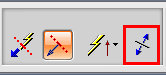
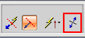

定义铰链线

定义铰链线选项为您提供了定义方位与模型特征关联的铰链线，剖切位置平行于铰链线，在铰链线方位变化时将更新。
铰链线矢量
当选择定义铰链线时，铰链线矢量列表出现在对话框条中。

可以从这个列表中选择一个选项来定义定向到模型边、面的轴、两个模型点、或者基准特征法向的铰链线。
反向

铰链线箭头表明了剖切视图的方向，如果需要反转铰链线的方向，单击对话框条上的反向，或者右击并选择反向。
定义铰链线选项为您提供了定义方位与模型特征关联的铰链线，剖切位置平行于铰链线，在铰链线方位变化时将更新。
当选择定义铰链线时，铰链线矢量列表出现在对话框条中。
可以从这个列表中选择一个选项来定义定向到模型边、面的轴、两个模型点、或者基准特征法向的铰链线。

铰链线箭头表明了剖切视图的方向，如果需要反转铰链线的方向，单击对话框条上的反向，或者右击并选择反向。